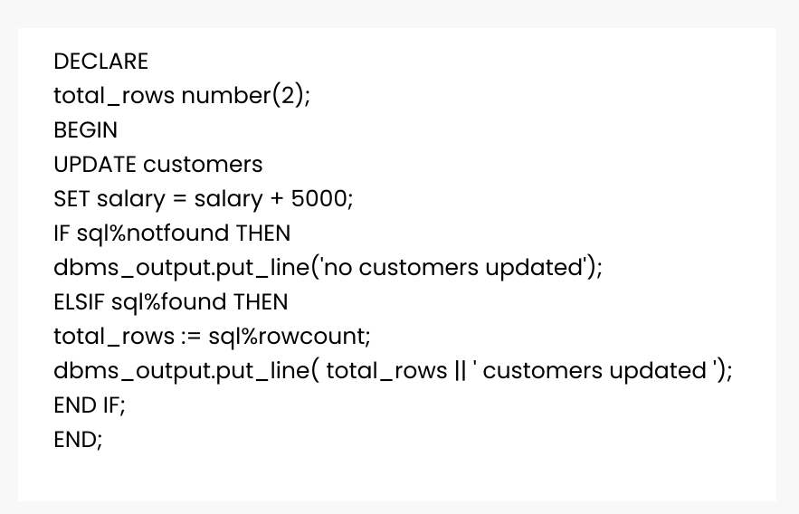
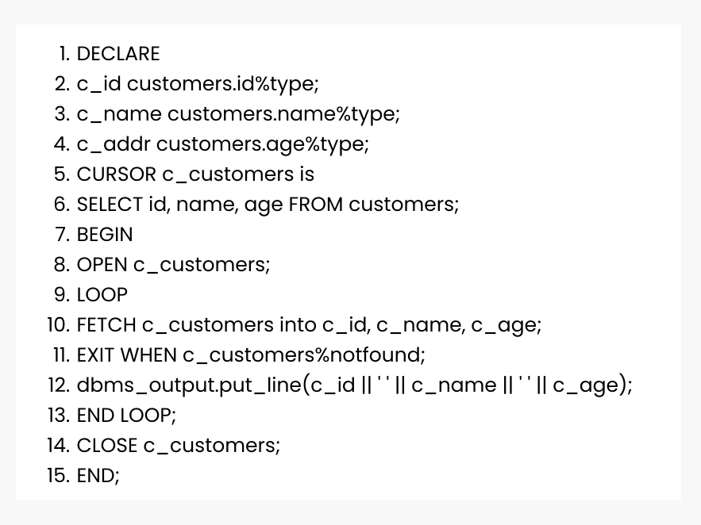

Popular Tutorials
HTML
View all
JavaScript
View all
Popular Exercises


Cursor in PL/SQL
When an SQL statement is processed, Oracle creates a memory area known as context area. A cursor is a pointer to this context area. It contains all information needed for processing the statement. In PL/SQL, the context area is controlled by Cursor. A cursor contains information on a select statement and the rows of data accessed by it.
A cursor is used to referred to a program to fetch and process the rows returned by the SQL statement, one at a time. There are two types of cursors:
Implicit Cursors
Explicit Cursors
The implicit cursors are automatically generated by Oracle while an SQL statement is executed, if you don't use an explicit cursor for the statement. These are created by default to process the statements when DML statements like INSERT, UPDATE, DELETE etc. are executed.
Implicit Cursor Example
Create table like this
| ID | Name | Age | Salary |
|---|---|---|---|
| 1 | Aryan | 19 | 25000 |
| 2 | Rohan | 22 | 20000 |
| 3 | Vinay | 35 | 45000 |
| 4 | Rankush | 45 | 55000 |
Let's execute the following program to update the table and increase salary of each customer by 5000. Here, SQL%ROWCOUNT attribute is used to determine the number of rows affected:
Procedure :
Output :
6 customers updated
PL/SQL procedure successfully completed.
Now, if you check the records in customer table, you will find that the rows are updated.
select * from customers;
| ID | Name | Age | Salary |
|---|---|---|---|
| 1 | Aryan | 19 | 30000 |
| 2 | Rohan | 22 | 25000 |
| 3 | Vinay | 35 | 50000 |
| 4 | Rankush | 45 | 60000 |
The Explicit cursors are defined by the programmers to gain more control over the context area. These cursors should be defined in the declaration section of the PL/SQL block. It is created on a SELECT statement which returns more than one row.
You must follow these steps while working with an explicit cursor.
Declare the cursor to initialize in the memory.
Open the cursor to allocate memory.
Fetch the cursor to retrieve data.
Close the cursor to release allocated memory.
Syntax for explicit cursor declaration
CURSOR name IS SELECT statement;
Syntax for cursor open:
OPEN cursor_name;
Syntax for cursor fetch:
FETCH cursor_name INTO variable_list;
Syntax for cursor close:
Close cursor_name;
For example, let us consider same table used in implicit and retrieve id, name and age of all
Output :
| ID | Name | Age |
|---|---|---|
| 1 | Aryan | 19 |
| 2 | Rohan | 22 |
| 3 | Vinay | 35 |
| 4 | Rankush | 45 |
PL/SQL procedure successfully completed.
Let us learn exception in PL/SQL
Share this page on :
© 2022 AnalyzeCode.com All rights reserved.